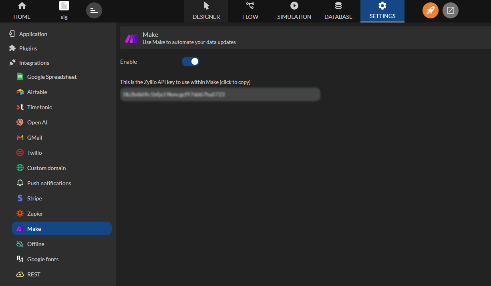
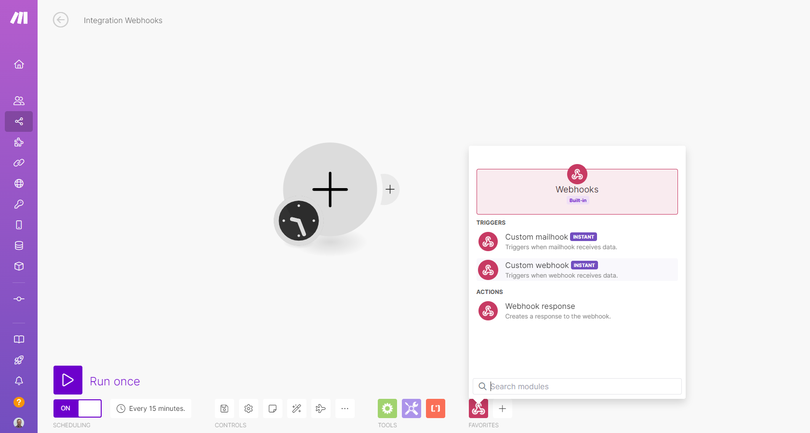
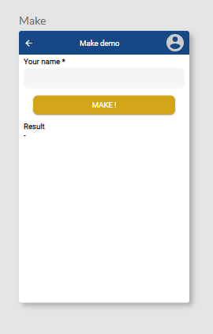
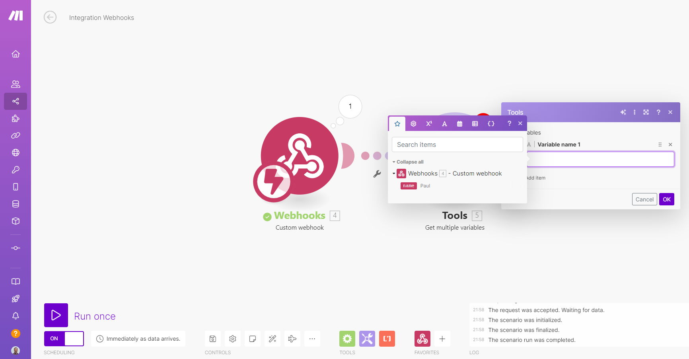
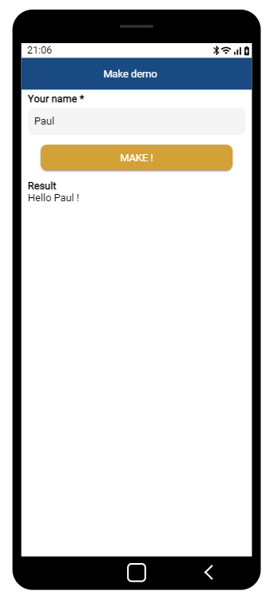

Make
Make est un outil d'automatisation en ligne qui connecte vos applications et services pour automatiser des taches repetitives sans avoir besoin de coder.
Disponible depuis le plan Enterprise.
Il fonctionne en reliant deux applications ou plus pour creer des automatisations, appelees Scenarios, qui declenchent une action dans une application lorsque quelque chose se produit dans une autre.
Zyllio propose une integration native avec Make qui permet :
- de declencher des scenarios depuis Zyllio (via Webhook),
- de mettre a jour des donnees Zyllio depuis des scenarios Make.
Prerequis
Un compte Make valide est necessaire pour connecter les solutions Make et Zyllio.
De plus, un abonnement au plan Zyllio Enterprise est requis pour activer cette fonctionnalite.
Configuration
L'integration de Make peut etre activee depuis l'onglet Settings / Integration / Make en activant le bouton Enable comme indique sur cette image.

Webhook Make
Creation du scenario Make
Une fois connecte a Make, creez un scenario.

Puis creez un module Custom Webhook comme suit :

Cliquez sur le bouton Add. Une fois le module Webhook configure, il suffit de cliquer sur le bouton Copy address to clipboard.

Creation de l'ecran
Cet ecran demande le nom de l'utilisateur pour le transmettre a Make via le Webhook.
L'ecran comprend :
- Un champ de saisie Text dont la variable s'appelle Your name.
- Un bouton qui declenche le Webhook Make via une action.
- Un composant LabelText qui affiche la reponse du Webhook stockee dans la variable Result.

Creation de l'action
Selectionnez le bouton puis cliquez sur sa propriete Action. Cliquez deposez l'action Make Webhook puis configurez l'action comme suit :
- La propriete Variable definie a Result.
- La propriete Webhook URL definie a l'URL de votre Webhook copiee depuis votre scenario Make.
- La propriete Request data contient une donnee appelee name qui fait reference a la variable Your name.
Ainsi, le Webhook Make recevra en parametre le nom de l'utilisateur saisi dans l'ecran Zyllio.

Tester le Webhook
Retournez dans le scenario Make, et cliquez sur le bouton Run once.

Le scenario Make est en attente d'appel depuis Zyllio. Depuis Zyllio, allez dans le mode simulation et cliquez sur le bouton Make pour invoquer le Webhook Make.

Une fois le Webhook execute une fois, Make detecte automatiquement les donnees transmises : ici la donnee name vaut Paul.

Le scenario Make est maintenant connecte a Zyllio, d'autres modules peuvent etre ajoutes (Mail, Notion, Slack, ...).
Configurer une reponse Webhook (optionnel)
Make permet au Webhook de retourner une reponse personnalisee au format texte ou JSON. Pour cela il faut utiliser le module Webhook Response en fin de scenario comme illustre ci-dessous.

Ce module permet d'indiquer une reponse dans la propriete body comme suit :

Ici la reponse renvoie Hello ! suivi du nom (name) passe en parametre du Webhook initialement.
Recuperer la reponse dans un ecran Zyllio
Reponse au format texte
Si le Webhook Response definit un texte dans sa propriete body, le format de la reponse est un texte.
Ainsi, l'action Make Webhook Zyllio recevra un texte et sera donc stockee dans la Variable. Il n'y a donc pas de parametrage supplementaire a effectuer dans l'action Zyllio. Voici le resultat.

Reponse au format JSON
Si le Webhook Response definit une structure JSON dans sa propriete body, le format de la reponse est le format JSON.
Pour retourner un message JSON il est necessaire que le module Webhook Response definisse un Header content-type egal a application/json.

Resultat dans l'ecran Zyllio.

Pour extraire un sous ensemble du message JSON, il suffit d'utiliser la propriete Response Expression. Pour extraire individuellement chaque donnee du message JSON, il suffit d'utiliser la formule JSON Query. En savoir plus sur les Response Expression et JSON Query : Integration REST.